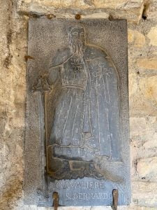

Les personnes qui recherchent sur Internet des informations sur la Principauté du Sabourg, erronément connue Principauté de Seborga et en italien Principato di Seborga trouveront certainement un nombre considérable de pages web relatives à des « princes et principautés » qui n’ont rien à voir avec l’état monastique qui existait au Moyen-Âge. Le but de cet article est de répondre le plus clairement possible à la question que se posent de nombreux visiteurs réels et virtuels de Seborga: pourquoi y a-t-il tant de « princes et principautés » à Seborga qui revendiquent le titre sans en posséder la prérogative religieuse?
Malheureusement, la raison principale réside dans le retrait des moines de Seborga il y a près de trois siècles, ce qui a donné lieu, depuis les années 80 du siècle dernier, à diverses revendications sur le territoire de Seborga de la part de certains villageois dénommés « Seborghini », ainsi que de certains aristocrates et de chevaliers autoproclamés.
Malheureusement, ces revendications de nature et d’intérêt divers n’ont rien à voir avec l’aspect proprement chrétien de la principauté monastique médiévale. Certains se prétendent héritiers de Napoléon, d’autres, d’autres familles impériales ou aristocratiques qui, historiquement, n’avaient aucun lien avec les moines de Lérins. Ainsi, en utilisant des « révélations impropres », ils ont créé des versions nouvelles et particulières de l’ancienne principauté monastique.
Ce phénomène a provoqué une production importante de sources historiques non fiables, qui rendra difficile pour le passionné d’histoire ou le touriste attentif aux traditions locales, de distinguer les éléments authentiques de la vie et des événements des moines à Seborga et Vintimille, des éléments qui ont plutôt altéré la connaissance de l’ancienne principauté depuis la fin du siècle dernier.
Cet article se veut un guide raisonné des interprétations laïques actuelles de l’état monastique. En particulier, nous examinerons trois versions différentes de la principauté et de ses princes et princesses.
Giorgio Carbone, le prince autoproclamé
L’association qu’il a fondée dans les années 1980 est connue sous le nom de « Principato di Seborga » (Principauté de Seborga) et semble ne pas être légalement constituée en Italie, bien qu’elle soit située sur le territoire italien. Cette principauté créée par Giorgio Carbone a une vocation folklorique notable qui attire de nombreux visiteurs à Seborga et qui, grâce à diverses inventions heureuses, a porté de grands fruits, augmentant la notoriété et les revenus économiques d’un petit village de l’arrière-pays ligure aujourd’hui oublié.
Giorgio Carbone (1936-2009) s’était autoproclamé prince dès 1963, lorsqu’il fut nommé grand maître d’un ordre chevaleresque appelé « Chevaliers Blanc de Seborga » directe émanation de la « Paupera Militia Christi ». Cet ordre prétendait que les Templiers étaient à l’origine de l’Ordre du Temple à Seborga sur l’ordre de Saint Bernard de Clairvaux, à qui l’on attribue également le titre de Grand Maître. Ce mythe ne trouve aucune correspondance dans l’histoire connue de l’Ordre du Temple fondé en l’année 1118 à Jérusalem. Carbone était un floriculteur bien établi et, à partir des années 80, sa présence devint importante à Seborga, grâce aussi aux médias et à l’impulsion des mouvements séparatistes qui commençaient à se développer en Italie (comme la Ligue Lombarde) mais aussi en France. Et c’est précisément l’Occitanie, avec son histoire de cathares, de moines cisterciens et de templiers, qui a inspiré le floriculteur à redéfinir les événements historiques de Seborga et c’est pour ce mérite qu’il sera rappelé à Seborga sur une plaque commémorative en tant que créateur de réalités passées.
{kind=link}
Dans les années 1990, Monsieur Giorgio Carbone, avec quelques citoyen locales, appelés « Seborghini », et des sympathisants, a surfé sur l’attente d’indépendance de Seborga en créant une principauté « bricolée », et a impliqué dans le projet une grande partie des citoyens du village de la Province italienne d’Imperia en accordant à ces Italiens le droit d’élire le Prince de Seborga (c’est-à-dire lui-même). Carbone était président du l’association locale de promotion touristique de Seborga (Pro Loco), et c’est donc dans ce contexte qu’il a conçu sa Principautè de Seborga, attirant une multitude de touristes qui ignoraient le vrai nom historique de la toponymie. Donc la Principauté de Seborga du prince Carbone aurait eu un territorie beaucoup plus petit que la Principauté historique, car elle ne comprendait pas les zones qui ne coïncidentait pas avec la Commune de Seborga où il a exercé son rôle de operatéur touristique.
Il ne fait aucun doute que Giorgio Ier était un laïc et que, par conséquent, le titre de caractère religieux du dernier abbé ne peut lui être transféré, ce qui ne peut être conféré que par des religieux à d’autres religieux. Par conséquent, le prince ne peut être désigné par les citoyens de Seborga car les électeurs, n’étant pas religieux, ne peuvent désigner une fonction religieuse. Le transfert du titre de prince à un laïc interromprait la continuité religieuse de la principauté monastique et il ne peut donc y avoir de succession du titre.
Il est évident que Carbone n’était pas très proche des principes de la doctrine catholique romaine, à tel point que l’on peut voir dans la reconstruction historique de Seborga les thèses des historiens occitans qui sont les auteurs du récit impliquant cathares et chrétiens romains unis ensemble dans un événement crucial pour l’histoire de l’humanité occidentale. Selon la reconstruction de Giorgio Carbone, Seborga, en tant que lieu d’établissement bénédictin, est devenu le cadre d’événements d’inspiration cathare et templière qui étaient non seulement éloignés de la vocation monastique du lieu, mais qui constituaient une hérésie. Ce n’est pas un hasard si, pour ces thèses, Giorgio Ier est rappelé sur la plaque commémorative apposée en son honneur à Seborga par la phrase: « expert en utroque et divulguant par ses écrits le culte et l’histoire des églises cathares ».
{kind=link}
Carbone attribue à saint Bernard de Clairvaux, en tant qu’abbé cistercien, la succession d’Hugues de Payens, le mentionnant également comme second Grand Maître d’un ordre templier et protecteur des Cathares à Seborga. Par conséquent, le saint et docteur de l’Église n’est plus un abbé cistercien, mais un grand maître hérétique et un défenseur des cathares, ennemis de l’Église de Rome et vaincus par les templiers.

Figuration de Saint Bernard de Clairvaux en tant que chevalier templier posé à l’extérieur de la porte d’entrée de l’ancien cloître à Seborga
« Au nom du peuple souverain de la Principauté de Seborga »
Selon les sources historiques et théologiques, ce droit d’élire le Prince de Seborga appartenait et appartient toujours exclusivement à ceux qui ont le droit de voter pour la fonction de Prince-Abbé, c’est-à-dire les presbytres et les moines de la Principauté du Sabourg, et le titre est « ad vitam », et non rééligible tous les sept ans comme il a été établi par Monsieur Marcello Menegatto, le successeur de M.Giorgio Carbone..
Les villageois appelés « Seborghini » sont ceux qui sont nés dans le village de Seborga et qui y vivent depuis des générations. Il s’agit peut-être de métayers qui cultivaient les terres de Seborga en payant la dîme au prince-abbé, mais qui n’avaient pas le droit d’élire le prince de Seborga, prérogative qui, nous le répétons, était (et est toujours) réservée aux ecclésiastiques.
Les villageois « Seborghini » auraient pu revendiquer leur indépendance à la naissance de la République Italienne, car les territoires individuels étaient autorisés à contester leur annexion au nouvel État républicain. Et nous n’avons pas connaissance que les dits « Seborghini » se soient opposés, peut-être dans l’espoir de constituer plus tard une éventuelle République de Seborga, comme démonstration d’un désir d’indépendance. Cette hypothétique république n’aurait de toute façon eu aucun lien avec la tradition de l’État monastique médiéval, comme nous l’avons amplement expliqué dans les parties précédentes de cet article.
{kind=link}
Marcello Menegatto élu prince de la principauté imaginaire par le peuple de Seborga
Giorgio Carbone a quitté le titre de prince de Seborga en 2009 à la suite de son décès. Après une période de transition gérée par l’avocat Alberto Romano, son successeur arrivera en 2010. Ce nouveau prince, né Marcello Menegatto, sera élu selon un principe de souveraineté du peuple de Seborga et prendra le nom de Marcello I. Marcel I n’a malheureusement pas terminé son deuxième mandat et a décidé d’abdiquer et de quitter Seborga. Pendant son séjour à Seborga, il est possible qu’il ait pris conscience des idées de Carbone et du fait qu’il s’agissait d’une principauté gouvernée par le Grand Maître des Chevaliers du Venerabilis Ordo Sancti Sepulchri, et qu’il ait donc décidé d’apporter des modifications aux statuts rédigés par Carbone dans ce sens. Des changements qui plongèrent dans la crise les chevaliers, probablement déjà impliqués dans des problèmes internes, qui se séparèrent et formèrent deux ordres distincts : le VEOPSS et le VOSS.
Il est intéressant de souligner que la fonction élective de prince (qui, pour Carbone, était à vie) a été modifiée par Marcel Ier pour une durée de 7 ans, comme s’il s’agissait d’élire le chef d’une république. Marcello Ier abandonnera ce titre en 2019, et par un nouveau suffrage des villageois de Seborga, son ex-épouse Nina Dobler sera élue à la tête de la principauté imaginaire, rompant ainsi avec toute tradition monastique en conférant ce titre à une femme.
Nina Dobler, première princesse de Seborga
{kind=link}
Mme Nina Dobler pretend d’avoir acquis le titre de princesse de Seborga après avoir été couronnée en 2020 par le suffrage des habitants du village Seborga et ses fidèles, dans la continuité des dispositions de son mari Marcello Ier.
Il va sans dire que Mme Dobler, devant justifier son rôle de princesse et de première femme à la tête d’un État historiquement monastique, a également dû modifier ses statuts. Parmi les changements introduits, on peut citer l’élargissement des droits de vote du prince et l’inclusion de nouveaux cas. Madame Dobler apparaît dans divers programmes télévisés, y compris nationaux, affirmant que le titre de princesse de Seborga lui a été conféré par le « peuple souverain de Seborga », alors qu’il est évident (voir la vidéo ci-dessous) que le mandat qui lui a été conféré n’a aucune continuité avec l’ancien État monastique.
Nous constatons que l’autoproclamé état princier moderne dirigé par Mme Nina Dobbler est plein de contradictions. Pour ne citer qu’une liste non exhaustive : le nouveau chef de l’État est une femme laïque d’origine allemande résident en Principauté de Monaco. Mais encore, parmi les ministres d’un État censé être chrétien et donc en principe opposé à l’usage des armes, il y a aussi un ministre de la défense qui dispose d’un canon en forme de simili-Napoléon placé sur la place principale en direction de la vue panoramique et censé être autorisé à tirer paradoxalement en direction des territoires voisins de la République italienne. Par ailleurs, sous le commandement de la princesse, il y a également une milice qui reçoit de manière goliardique les gens de l’extérieur, les faisant tous passer pour des étrangers même s’ils sont italiens, banalisant ainsi le témoignage du premier État monastique de l’histoire de l’humanité. Récemment, nous avons également appris que le ministre de la culture de cette principauté imaginaire s’était déguisé en moine bénédictin, probablement pour créer la confusion au sein de l’ancien État des moines.
Diego Beltrutti, prieur du Venerabilis Ordo Sancti Sepulchri (Chevaliers blancs de Seborga)
{kind=link}
Diego Beltrutti, n’est pas un religieux mais un médecin d’origine piémontaise qui prétend être le successeur de Giorgio Carbone, étant le Prieur élu par l’Ordre de la Paupera Militia Christi fondé par Carbone, qui devint VEOPSS et après un schisme interne prit l’acronyme VOSS. Beltrutti soutient les mêmes thèses que Giorgio Carbone lorsqu’il décida de revendiquer le titre de Prince de Seborga en tant que Grand Maître de l’Ordre Sancti Sepulchri.
Il convient de noter que dans le drapeau de la principauté de Georges Ier, toujours utilisé par le Dr. Diego Beltrutti, neuf bandes bleues apparaissent sur le côté des armoiries et représentent les neuf chevaliers fondateurs de l’Ordre du Temple ainsi que des armoiries reproduites qui remontent à la monarchie grecque.
Beltrutti pense également à Madame Dobler que Seborga est devenue une principauté en l’anné 1079 à la demande de l’empereur Henri IV, en conférant le titre de Prince du Saint Empire Romain à l’abbé Adalbert Ier de Lérins.
Nous confirmons que cette reconstruction n’est étayée par aucun document historico-juridique.
Par ailleurs, le docteur Diego Beltrutti de San Biagio, aurait publiquement défendu l’évêque du diocèse de Vintimille et San Remo sur le site de l’ordre chevaleresque qu’il dirige.